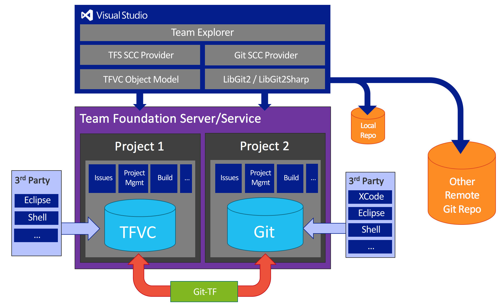

Git
-- Nuts & Bolts --
Presentation by Satya Sudheer / @satya_sudheer
Agenda
- What is a Distributed Version Control System?
- The Git Repository (Nuts & Bolts)
- Git Basic Commands
- History, Commits, Merging, Fast-Forward Merges, Rebase, Everything
Advanced Git
- Commit by hand (repo internals)
- Rebase
- Interactive Rebase
- Rebase on Pull
- External diff tools
- Advanced logging
- Reflog
- Reset
What is a Distributed Version Control System?
How Git is different from TFS?
 Source: Microsoft Build
Source: Microsoft Build
Git in VS
 Source: Microsoft BuildThe Git Repository (Nuts & Bolts)
History
Commits
Branches
Merges
Rebase
Working Directory
Contents of .git folder
- Blob — A blob object is used for storing the contents of a single file.
- Tree — A tree object contains references to other blobs or subtrees.
- Commit — A commit object contains the reference to another tree object and some other information(author, committer etc.)
- Tag — A tag or a tag object is just another reference to a commit object and just makes for easier referencing.